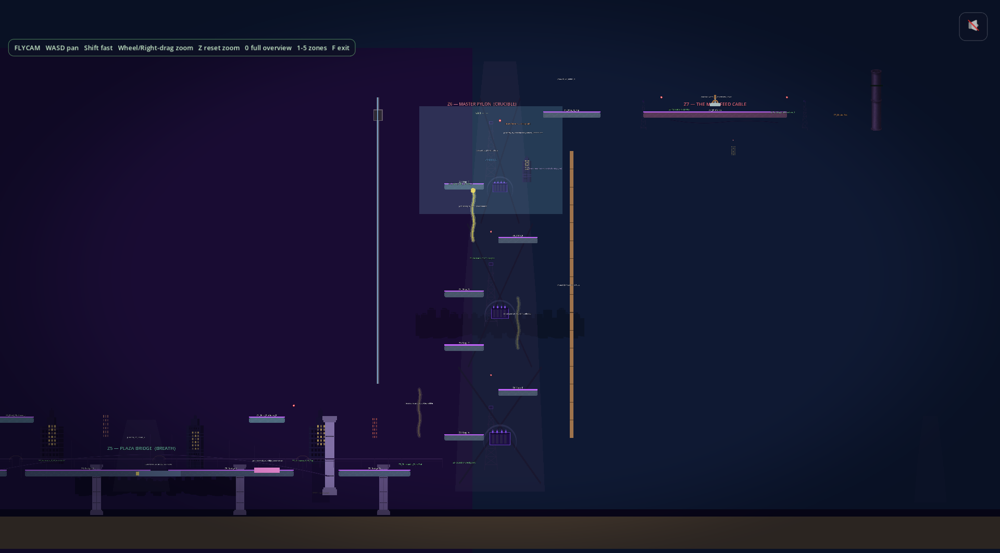
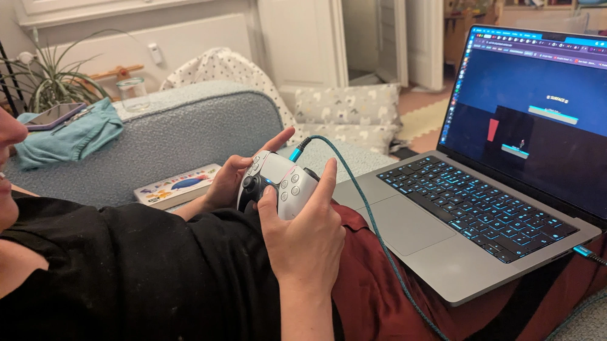

Day 24: the end is built
Two weeks since the last devlog. The game has an ending now. All six missions playable end to end, plus an epilogue. Playable on phone or desktop.

Mission 5 and Mission 6
Mission 5 is the part where the game says what it is actually arguing. It is a Pentagon weapons-AI facility. Real placards on the walls about Project Maven, data-center water draw, the human leaving the decision loop. The narrator does not boast about any of it. It explains. The game is not "AI is evil." The game is "AI is banal, fast, scalable, and quietly removes the human."
Mission 6 is the finale. One long corridor that de-renders around the player as the AI dissolves. There is a long held moment in the middle where the AI loses the thread, and then a warm grace speech, and then it dies on a slowing heartbeat. Then a short morning epilogue with the same voice on a kitchen radio. The whole arc is structurally there. The art and audio polish on the finale comes next.

Mission 1 got most of its art replaced
It is the first mission a new player sees, and it had the most placeholder art still in it. Bespoke data-center screens, server walls with proper depth, a real finale where pulling the disconnect triggers a small collapse cascade. It reads as a place now instead of a tutorial.
Mission 4 stopped killing you for being rescued
Mission 4 is the orbit one with zero-G. A handful of long-standing bugs got fixed: the jump arc finally fits the gravity, the camera follows through the final zone, and a missing checkpoint was breaking a death loop. It is playable end to end now without dev shortcuts.
The first real playtest
My girlfriend sat down on the couch with a controller and played the first three missions. She had not seen any of it before. She had fun. That is the only test that mattered this fortnight.

What's next
A real end-to-end playtest of all six missions in one sitting, with a notebook in my lap. The polish queue for Mission 6 (bespoke crystal core, storm overlay, heartbeat audio) is the obvious next move. Then it is mostly tuning.
Comments
Anyone can post. Captcha keeps the bots out. No links allowed.